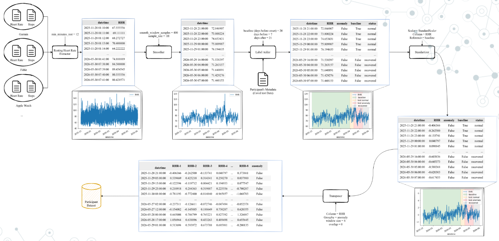
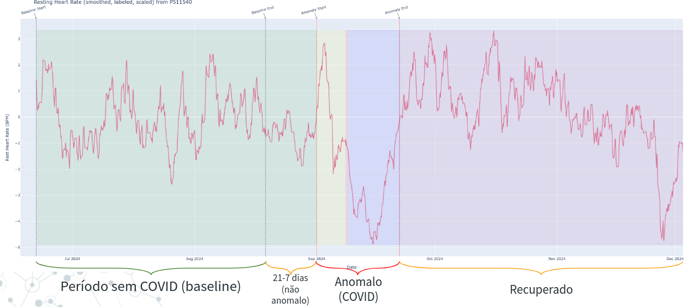

5. Training an Anomaly Detection Model for Covid Anomaly Detection
Overview
In this tutorial, we will train an anomaly detection model using a simple LSTM-AutoEncoder model. Data can be obtained from this link. This is a processed version of data from original Stanford dataset-Phase 2. The overall pre-processing pipeline used is illustrated in Figure below.

Data was aquired from diferent sources (Germin, FitBit, Apple Watch) and pre-processed to have a common format. In this form, data has two columns: heart rate and number of user steps in last minute.
The processing pipeline is then applied to the data. The pipeline is composed of the following steps: 1. Once data was standardized, the resting heart rate was extracted (Resting Heart Rate Extractor, in Figure). This process takes as input min_minutes_rest that is the number of minutes that the user has to be at rest to consider the heart rate as resting. min_minutes_rest variable looks at user steps and, when user steps is 0 for min_minutes_rest minutes, the heart rate is
considered as resting. At the end of this process, we will have a new dataframe with: the date (datetime column) and the resting heart rate of the last minute (RHR column).
The smoother process is applied to the data (
Smoother, in Figure). This process takes as inputsmooth_window_samplethat is the number of samples that we will use to smooth the data, andsample_ratethat is the sample rate. The smoother process will apply a moving average filter to the data, with a window ofsmooth_window_samplesamples. Then the data is downsampled tosample_ratesamples per minute. This process will produce a new dataframe with the date (datetimecolumn), the resting heart rate at desired sampling rate (RHRcolumn).The second step is adding labels (
Label Adder, in Figure). Is is also illustrated in Figure below. This process takes 3 inputs:baseline_days,before_onset, andafter_onset. Thebaseline_daysis the number of days before the onset of the symptoms that we consider as baseline (in figure below, this is 21 days). Thus, using the dataframe from last step, a new column namedbaselineis added, which is a boolean column that is True if the date is in the baseline period (21 days before onset). Thebefore_onsetandafter_onsetare the number of days before and after the onset of the symptoms that we consider as the anomaly period (7 days before and 21 days before, in Figure below). A new column namedanomalyis added, which is a boolean column that is True if the date is in the anomaly period. Finnaly, we also add astatuscolumn,that is a metadata column for a descriptive status of the date. If can be:normal: if the date is in the baseline period;before onset: if the date is in the period before the onset of the symptoms;onsetif the date is the onset of the symptoms (day);after onsetif the date is in the period after the onset of the symptoms, but before the recovery;recoveredif the date is in the recovery period.
Once the labels were added we normalize the data (
Standardizerin Figure above). This process perform a Z-norm scale on the data. The Z-norm scale is calculated as: \(z = \frac{x - \mu}{\sigma}\), where \(x\) is the value, \(\mu\) is the mean of the column and \(\sigma\) is the standard deviation of the column. An important note here is that the mean and standard deviation are calculated only for the baseline period, and then applied to the entire dataset.The last step is to create the sequences (
Transposer, in Figure), that will group \(n\) rows and transform it into columns (features). This process takes as inputwindow_sizeandoverlapparameters and creates sequences ofwindow_sizesamples with an overlap ofoverlapsamples. Thus, if we have a dataset with 100 samples, awindow_sizeof 20 and anoverlapof 0, we will have 5 sequences of 20 samples each (i.e. 5 rows with 20 columns). Each element of the sequence will be a column in the dataframe, numbered from 0 to 19. Thus, for example, the sequences will have columnsRHR-0,RHR-1, …,RHR-19, where the first row is the first 20 samples, the second row is the second 20 samples, and so on. This is useful as it is the format that the LSTM-AutoEncoder model expects as input. An important note is that we do not mix sequences from anomaly and non-anomaly periods. Thus, no label is mixed, that is, an anomaly sample only has anomaly time-steps.
This will produce a dataframe (CSV file) for each user. In processed dataset, we joined all users in a single file and add a column participant_id to identify the user. This makes easier to work with the data in the next steps.

We already generated several files, with different parameters and operations of the pre-processing pipeline: * rhr_df: dataframe with the resting heart rate without normalization (step 4) and transposing (step 5). The min_minutes_rest is 12, smooth_window_sample is 400, sample_rate is 1 hour, baseline_days is 21, before_onset is 7, and after_onset is 21. * rhr_df_scaled: same as rhr_df, but with normalization. * windowed_16_overlap_0_rate_10min_df: same
dataframe as rhr_df with the resting heart rate normalized (step 4) and transposed (step 5). The window_size is 16, overlap is 0, and sample_rate is 10 minutes. * windowed_16_overlap_0_rate_10min_scaled_df: same dataframe as windowed_16_overlap_0_rate_10min_df, but with normalization.
NOTE: The files follows this naming convention: windowed_{window_size}_overlap_{overlap}_rate_{sample_rate}_df.csv. If sample_rate is ommited, it is, by default 1 hour. NOTE: The files may and with fold_X, where X is the fold number. This is used for cross-validation purposes.
Training
Let’s import some libraries
[1]:
import pandas as pd
from ssl_tools.data.data_modules.covid_anomaly import CovidUserAnomalyDataModule
from ssl_tools.utils.data import get_full_data_split
from ssl_tools.models.nets.lstm_ae import LSTMAutoencoder
import lightning as L
import torch
import numpy as np
from torchmetrics import MeanSquaredError
Load data and inspect
[2]:
# Read CSV data
data_path = "/workspaces/hiaac-m4/data/Stanford-COVID/processed/windowed_16_overlap_8_df_scaled.csv"
df = pd.read_csv(data_path)
df
[2]:
| datetime | RHR-0 | RHR-1 | RHR-2 | RHR-3 | RHR-4 | RHR-5 | RHR-6 | RHR-7 | RHR-8 | ... | RHR-10 | RHR-11 | RHR-12 | RHR-13 | RHR-14 | RHR-15 | anomaly | baseline | label | participant_id | |
|---|---|---|---|---|---|---|---|---|---|---|---|---|---|---|---|---|---|---|---|---|---|
| 0 | 2027-01-14 21:00:00 | 1.170175 | 0.653752 | -0.392374 | -1.431553 | -2.129013 | -2.755962 | -3.681322 | -4.674443 | -5.668570 | ... | -6.937363 | -7.102118 | -6.975790 | -6.554774 | -6.112156 | -5.396099 | False | True | normal | P110465 |
| 1 | 2027-01-15 05:00:00 | -5.668570 | -6.373289 | -6.937363 | -7.102118 | -6.975790 | -6.554774 | -6.112156 | -5.396099 | -4.415848 | ... | -2.656756 | -1.305630 | -0.072756 | 1.046195 | 1.530467 | 1.829053 | False | False | normal | P110465 |
| 2 | 2027-01-15 13:00:00 | -4.415848 | -3.467073 | -2.656756 | -1.305630 | -0.072756 | 1.046195 | 1.530467 | 1.829053 | 1.223064 | ... | -0.424000 | -1.145581 | -1.355121 | -2.321206 | -3.124961 | -3.928738 | False | False | normal | P110465 |
| 3 | 2027-01-15 21:00:00 | 1.223064 | 0.472444 | -0.424000 | -1.145581 | -1.355121 | -2.321206 | -3.124961 | -3.928738 | -4.802627 | ... | -6.067744 | -5.460156 | -4.671143 | -3.408943 | -2.237883 | -1.187843 | False | False | normal | P110465 |
| 4 | 2027-01-16 05:00:00 | -4.802627 | -5.831013 | -6.067744 | -5.460156 | -4.671143 | -3.408943 | -2.237883 | -1.187843 | -0.062360 | ... | 2.266944 | 3.794465 | 4.625745 | 4.827756 | 4.720000 | 4.677464 | False | False | normal | P110465 |
| ... | ... | ... | ... | ... | ... | ... | ... | ... | ... | ... | ... | ... | ... | ... | ... | ... | ... | ... | ... | ... | ... |
| 31732 | 2024-12-13 00:00:00 | -0.180702 | -0.499793 | -0.749829 | -0.868485 | -0.966754 | -1.004670 | -0.888210 | -0.580762 | -0.467943 | ... | 0.092000 | 0.347840 | 0.636395 | 0.958195 | 1.170514 | 1.301841 | False | False | recovered | P992022 |
| 31733 | 2024-12-13 08:00:00 | -0.467943 | -0.162740 | 0.092000 | 0.347840 | 0.636395 | 0.958195 | 1.170514 | 1.301841 | 1.477526 | ... | 1.660344 | 1.656600 | 1.685652 | 1.747252 | 1.767329 | 1.793616 | False | False | recovered | P992022 |
| 31734 | 2024-12-13 16:00:00 | 1.477526 | 1.657321 | 1.660344 | 1.656600 | 1.685652 | 1.747252 | 1.767329 | 1.793616 | 1.728615 | ... | 1.509833 | 1.380749 | 1.263744 | 1.139997 | 1.024205 | 0.946663 | False | False | recovered | P992022 |
| 31735 | 2024-12-14 00:00:00 | 1.728615 | 1.616265 | 1.509833 | 1.380749 | 1.263744 | 1.139997 | 1.024205 | 0.946663 | 1.136868 | ... | 1.642153 | 1.909381 | 2.114439 | 2.282238 | 2.453691 | 2.587843 | False | False | recovered | P992022 |
| 31736 | 2024-12-14 08:00:00 | 1.136868 | 1.380418 | 1.642153 | 1.909381 | 2.114439 | 2.282238 | 2.453691 | 2.587843 | 2.437232 | ... | 2.359840 | 2.173400 | 2.098140 | 1.967669 | 1.784512 | 1.561848 | False | False | recovered | P992022 |
31737 rows × 21 columns
Creating a LightningDataModule. * The first parameter is the path to the CSV file. * participants: is a list of participants to include in dataset. If nothing is passed, all participants in CSV are included. * batch_size: is the batch size to use in the dataloader. * num_workers: is the number of workers to use in the dataloader. * reshape: is the shape of the input data. For LSTM-AutoEncoder, it is
(sequence_length, num_features), or, in our case (16, 1)
NOTE: The training data is only data where baseline is True. The test data will be only data where baseline is False.
[3]:
dm = CovidUserAnomalyDataModule(
data_path,
participants=["P992022"],
batch_size=32,
num_workers=0,
reshape=(16, 1),
)
dm
[3]:
CovidUserAnomalyDataModule (Data=/workspaces/hiaac-m4/data/Stanford-COVID/processed/windowed_16_overlap_8_df_scaled.csv, 1 participant selected)
Let’s create the lightning model
[4]:
model = LSTMAutoencoder(input_shape=(16, 1))
model
[4]:
LSTMAutoencoder(
(backbone): _LSTMAutoEncoder(
(lstm1): LSTM(1, 128, batch_first=True)
(lstm2): LSTM(128, 64, batch_first=True)
(repeat_vector): Linear(in_features=64, out_features=1024, bias=True)
(lstm3): LSTM(64, 64, batch_first=True)
(lstm4): LSTM(64, 128, batch_first=True)
(time_distributed): Linear(in_features=128, out_features=1, bias=True)
)
(loss_fn): MSELoss()
)
Creting Trainer
[5]:
trainer = L.Trainer(max_epochs=100, devices=1, accelerator="cpu")
trainer
GPU available: True (cuda), used: False
TPU available: False, using: 0 TPU cores
IPU available: False, using: 0 IPUs
HPU available: False, using: 0 HPUs
/usr/local/lib/python3.10/dist-packages/lightning/pytorch/trainer/setup.py:187: GPU available but not used. You can set it by doing `Trainer(accelerator='gpu')`.
[5]:
<lightning.pytorch.trainer.trainer.Trainer at 0x7f98860215a0>
Fit the model using training data from the datamodule
[6]:
trainer.fit(model, dm)
| Name | Type | Params
----------------------------------------------
0 | backbone | _LSTMAutoEncoder | 316 K
1 | loss_fn | MSELoss | 0
----------------------------------------------
316 K Trainable params
0 Non-trainable params
316 K Total params
1.264 Total estimated model params size (MB)
/usr/local/lib/python3.10/dist-packages/lightning/pytorch/trainer/connectors/data_connector.py:441: The 'val_dataloader' does not have many workers which may be a bottleneck. Consider increasing the value of the `num_workers` argument` to `num_workers=47` in the `DataLoader` to improve performance.
/usr/local/lib/python3.10/dist-packages/lightning/pytorch/trainer/connectors/data_connector.py:441: The 'train_dataloader' does not have many workers which may be a bottleneck. Consider increasing the value of the `num_workers` argument` to `num_workers=47` in the `DataLoader` to improve performance.
/usr/local/lib/python3.10/dist-packages/lightning/pytorch/loops/fit_loop.py:298: The number of training batches (5) is smaller than the logging interval Trainer(log_every_n_steps=50). Set a lower value for log_every_n_steps if you want to see logs for the training epoch.
`Trainer.fit` stopped: `max_epochs=100` reached.
Predicting
[ ]:
def compute_losses(y, y_pred, loss_fn):
losses = []
for _y, _y_pred in zip(y, y_pred):
loss = loss_fn(_y, _y_pred)
loss = loss.detach().numpy().item()
losses.append(loss)
return losses
[12]:
dm.setup("fit")
train_dataset = dm.train_dataloader().dataset
dm.setup("test")
test_dataset = dm.test_dataloader().dataset
Defining Anomaly Threshold
[13]:
x_train = torch.stack([torch.Tensor(x) for x, y in train_dataset])
y_train = np.array([y for x, y in train_dataset])
x_train_hat = model(x_train)
[14]:
mse = MeanSquaredError()
losses = compute_losses(x_train, x_train_hat, mse)
anomaly_threshold = max(losses)
anomaly_threshold
[14]:
0.3742748498916626
Predicting on Test set
[15]:
x_test = torch.stack([torch.Tensor(x) for x, y in test_dataset])
y_test = np.array([y for x, y in test_dataset])
x_test_hat = model(x_test)
[16]:
mse = MeanSquaredError()
losses = compute_losses(x_test, x_test_hat, mse)
y_test_hat = [1 if loss > anomaly_threshold else 0 for loss in losses]
[17]:
results_dataframe = pd.DataFrame(
{
"true": y_test,
"predicted": y_test_hat,
"loss": losses,
"anomaly_threshold": anomaly_threshold,
}
)
results_dataframe
[17]:
| true | predicted | loss | anomaly_threshold | |
|---|---|---|---|---|
| 0 | 0 | 0 | 0.023700 | 0.374275 |
| 1 | 0 | 0 | 0.091413 | 0.374275 |
| 2 | 0 | 0 | 0.054299 | 0.374275 |
| 3 | 0 | 0 | 0.007486 | 0.374275 |
| 4 | 0 | 0 | 0.024601 | 0.374275 |
| ... | ... | ... | ... | ... |
| 89 | 1 | 0 | 0.089833 | 0.374275 |
| 90 | 1 | 0 | 0.051562 | 0.374275 |
| 91 | 1 | 0 | 0.132748 | 0.374275 |
| 92 | 1 | 0 | 0.158610 | 0.374275 |
| 93 | 1 | 0 | 0.025522 | 0.374275 |
94 rows × 4 columns
Visualizing Metrics and Confusion Matrix
[18]:
from sklearn.metrics import f1_score, recall_score, balanced_accuracy_score, roc_auc_score
# Extract true and predicted labels from the results_dataframe
true_labels = results_dataframe['true']
predicted_labels = results_dataframe['predicted']
# Calculate the F1-score
f1 = f1_score(true_labels, predicted_labels)
# Calculate the recall
recall = recall_score(true_labels, predicted_labels)
# Calculate the balanced accuracy
balanced_acc = balanced_accuracy_score(true_labels, predicted_labels)
# Calculate the ROC AUC
roc_auc = roc_auc_score(true_labels, predicted_labels)
# Print the results
print("F1-score:", f1)
print("Recall:", recall)
print("Balanced Accuracy:", balanced_acc)
print("ROC AUC:", roc_auc)
F1-score: 0.0
Recall: 0.0
Balanced Accuracy: 0.5
ROC AUC: 0.5
[19]:
import numpy as np
from sklearn.metrics import confusion_matrix
import matplotlib.pyplot as plt
# Get the true and predicted labels from the results_dataframe
true_labels = results_dataframe['true']
predicted_labels = results_dataframe['predicted']
# Compute the confusion matrix
cm = confusion_matrix(true_labels, predicted_labels)
# Define the class labels
class_labels = ['Normal', 'Anomaly']
# Plot the confusion matrix
plt.figure(figsize=(8, 6))
plt.imshow(cm, interpolation='nearest', cmap=plt.cm.Blues)
plt.title('Confusion Matrix')
plt.colorbar()
tick_marks = np.arange(len(class_labels))
plt.xticks(tick_marks, class_labels, rotation=45)
plt.yticks(tick_marks, class_labels)
plt.xlabel('Predicted Label')
plt.ylabel('True Label')
# Add the values to the confusion matrix plot
thresh = cm.max() / 2.
for i in range(cm.shape[0]):
for j in range(cm.shape[1]):
plt.text(j, i, format(cm[i, j], 'd'),
horizontalalignment="center",
color="white" if cm[i, j] > thresh else "black")
plt.tight_layout()
plt.show()
[ ]: